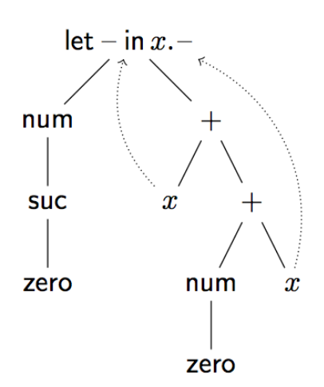

Megjegyzés: A kidolgozásban lévő képletek itt csak szemléltetés és megértés miatt szerepelnek. A tárgy vizsgájára sem kellett ezeket megjegyezni, mivel segéd lapon kint volt. Itt a fogalmakat érdemes megjegyezni és a nyelv konstruálás és szabályrendszer alkotás mikéntjét megérteni.
AST -- abstract syntax tree -- olyan fa, melynek a levelein változók vannak, közbenső pontjaikon pedig operátorok. Például a természetes szám kifejezések és az ezekből és összeadásból álló kifejezések AST-it az alábbi definíciókkal adhatjuk meg.
\[ n,n', \ldots \in Nat\ ::=\ i\ |\ zero\ |\ suc\ n \] \[ e,e', \ldots \in Exp\ ::=\ x\ |\ num\ n\ |\ e\ +\ e' \]
Nat-ot és Exp-et fajtának nevezzük. A Nat fajtájú AST-ket n-el, n'-vel stb. jelöljük. Nat fajtájú AST lehet egy i változó, vagy létre tudjuk hozni a nulláris zero operátorral (aritása ()Nat) vagy az unáris suc operátorral (aritása (Nat)Nat). n egy tetszőleges Nat fajtájú AST-t jelöl, míg i maga egy Nat fajtájú AST, mely egy darab változóból áll.
Az Exp fajtájú AST-ket e-vel és ennek vesszőzött változataival jelöljük, az Exp fajtájú változókat x-el jelöljük. Exp fajtájú AST-t egy unáris operátorral (num, aritása (Nat)Exp) és egy bináris operátorral (+, aritása (Exp, Exp)Exp) tudunk létrehozni. A num operátorral Nat fajtájú AST-ket tudunk kifejezésekbe beágyazni.
Minden fajtához változóknak egy külön halmaza tartozik, ezért jelöljük őket különböző betűkkel. A változók halmaza végtelen (mindig tudunk friss változót kapni, olyat, amilyet még sehol nem használtunk) és eldönthető, hogy két változó egyenlő -e. Az előbbi két fajtához tartozó változók halmazát így adhatjuk meg.
\[ i, i', i_{1} \ldots \in Var_{Nat} \] \[ x, x', x_{1}, y, z, \ldots \in Var_{Exp} \]
A metaváltozókat (n, n', e, e', stb.) megkülönböztetjük a kifejezésekben szereplő változóktól, melyek \(Var_{Nat}\), \(Var_{Exp}\) elemei. A metaváltozók a metanyelvünkben használt változók, a metanyelv az a nyelv, amiben ezek a mondatok íródnak.
Az absztrakt kötéses fák (ABT, abstract binding tree) az AST-khez hasonlók, de változót kötő operátorok is szerepelhetnek benne. Ilyen például a let e in x.e', mely pl. azt fejezheti ki, hogy e'-ben az x előfordulásai e-t jelentenek (ez a let kifejezések egy lehetséges szemantikája, de ebben a fejezetben csak szintaxissal foglalkozunk, emiatt nem igaz, hogy let e in x.x+x = e+e). Azt mondjuk, hogy az x változó kötve van az e' kifejezésben. A let operátor aritását (Exp, Exp.Exp)Exp-el jelöljük, az operátor második paraméterében köt egy Exp fajtájú változót. Pl. let num (suc zero)in x.x+ (num zero+x) kifejezésben a + operátor x paraméterei a kötött x-re vonatkoznak. Ezt a következőképp ábrázolhatjuk. A felfele mutató szaggatott nyilak mutatják, hogy az x változók melyik kötésre mutatnak. A pont után szereplő x + (num zero + x) részkifejezést az x változó hatáskörének nevezzük.
A kötött változók csak pozíciókra mutatnak, a nevük nem érdekes. Például a let num zero in x.x + x és a let num zero in y.y + y ABT-k megegyeznek (\(\alpha\)-konvertálhatónak vagy \(\alpha\)-ekvivalensnek szokás őket nevezni). A szabad változókra ez nem igaz, pl. x + x /= y + y. Ha többször ugyanazt a változót kötjük egy ABT-ben, az újabb kötés elfedi az előzőt. Pl. let num zero in x.x + let num (suc x)in x.x+x-ben az x+x-ben levő x-ek a második kötésre (ahol num (suc x)-et adtunk meg) mutat (a num (suc x)-ben levő x viszont az első kötésre mutat).
Az elfedés megszüntethető a változónevek átnevezésével: let num zero in y.y + let num(suc y) in x.e. Ebben az ABT-ben már hivatkozhatunk az e részfában az x-re is meg a külső y-ra is. Helyettesíteni tudunk ABT-kben is, pl. szeretnénk a következő egyenlőségeket.
Példa ABT 
Ítéleteket ABT-kről mondunk. Az ítéletek levezetési szabályokkal vezethetők le. A levezetési szabályok általános formája az alábbi. \(J_{1}\), ..., \(J_{n}\)-t feltételeknek, J-t következménynek nevezzük.
\[ \frac{J_{1} \ldots J_{n}}{J} \]
Ez a rész a "Számok és szövegek" nyelven keresztül fogja szemléltetni az említett fogalmakat.
A szintaxis két fajtából áll, a típusokból és a kifejezésekből.
| szabály | megnevezés |
|---|---|
| \[ \tau, \tau', \ldots\ \in\ T_{y}\ ::=\ int \] | egész számok típusa |
| | str | szövegek típusa |
| \[ \mid e, e', \ldots \in Exp\ ::= x \] | változó |
| | n | egész szám beágyazása |
| | "s" | szöveg beágyazása |
| | e+e | összeadás |
| | e-e | kivonás |
| \[ \mid e \bullet e \] | összefűzés |
| | |e| | hossz |
| \[ \mid let\ e\ in x.e' \] | definíció |
A típusok kétfélék lehetnek, int és str, típusváltozókat nem engedélyezünk. A kifejezések mellé írtuk a jelentésüket, általában így gondolunk ezekre a kifejezésekre, hogy ezek számokat, szövegeket reprezentálnak. De fontos, hogy ezek nem tényleges számok, csak azok szintaktikus reprezentációi. A szintaxis csak egy formális dolog, karakterek sorozata (pontosabban egy ABT), jelentését majd a szemantika adja meg.
Az Exp fajtájú változókat x,y,z és ezek indexelt változatai jelölik.
Az operátorok aritásai a szintaxis definíciójából leolvashatók, pl. a (jelöletlen) beágyazás operátor aritása (Z)Exp, |-| aritása (Exp)Exp, LET aritása (Exp,Exp.Exp)Exp.
A típusrendszer megszorítja a leírható kifejezéseket azzal a céllal, hogy az értelmetlen kifejezéseket kiszűrje. Pl. a |3| kifejezést ki szeretnénk szűrni, mert szeretnénk, hogy a hossz operátort csak szövegekre lehessen alkalmazni. Az, hogy pontosan milyen hibákat szűr ki a típusrendszer, nincs egységesen meghatározva, ez a típusrendszer tervezőjén múlik.
Hogy a típusrendszert le tudjuk írni, szükségünk van még a környezetek (context) fajtájára. Egy környezet egy változókból és típusokból álló lista. (Analógia: a környezet olyan, mint számítógépben a memória)
\[ \Gamma,\Gamma',\ldots \in\ Con ::= \cdot \,|\, \Gamma,x:\tau \]
A célunk a környezettel az, hogy megadja a kifejezésekben levő szabad változók típusait. A típusozási ítélet \(\Gamma\ \vdash\ e:\tau\) formájú lesz, ami azt mondja, hogy az \(e\) kifejezésnek \(\tau\) típusa van, feltéve, hogy a szabad változói típusai a \(\Gamma\) által megadottak.
Emiatt bevezetünk egy megszorítást a környezetekre: egy változó csak egyszer szerepelhet. Először is megadunk egy függvényt, mely kiszámítja a környezet változóit tartalmazó halmazt. \[ dom(\cdot)\ := \{\} \] \[ dom(\Gamma,x:\tau)\ := \{x\} \cup \ dom(\Gamma) \] A \(\Gamma\) wf ítélet azt fejezi ki, hogy a \(\Gamma\) környezet jól formált.
\[ \frac{}{\cdot \ wf} \] \[ \frac{\Gamma \ wf \ x \not\in \ dom(\Gamma)}{\Gamma,x:\tau \ wf} \]
Bevezetünk egy ítéletet, amely azt mondja, hogy egy változó-típus pár benne van egy környezetben. \[ \frac{\Gamma \ wf x \not\in \ dom(\Gamma)}{(x:\tau) \in \Gamma,x:\tau} \] \[ \frac{(x:\tau) \in \Gamma y \not\in \ dom(\Gamma)}{(x:\tau) \in \Gamma,y:\tau'} \] Az első szabály azt fejezi ki, hogy ha egy környezet utolsó alkotóeleme \(x:\tau\), akkor ez természetesen szerepel a környezetben. Továbbá, ha egy környezetben \(x:\tau\) szerepel, akkor egy \(y\) változóval kiegészített környezetben is szerepel.
A típusrendszerrel \(\Gamma \vdash e:\tau\) formájú ítéleteket lehet levezetni, ami azt jelenti, hogy a \(\Gamma\) környezetben az e kifejezésnek \(\tau\) típusa van. Úgy is gondolhatunk erre, hogy e egy program, melynek típusa \(\tau\) és a program paraméterei és azok típusai \(\Gamma\)-ban vannak megadva. A levezetési szabályok a következők. (Csak egyetlen szabályt írok itt le a forma kedvéért, többit lásd a jegyzetben.)
\[ \frac{\Gamma \vdash e_1 : int \ \Gamma \vdash e_2 : int}{\Gamma \vdash e_1 + e_2 : int} \]
A szemantika a szintaxis jelentését adja meg. Ez megtehető valamilyen matematikai struktúrával, ilyenkor minden szintaktikus objektumhoz az adott struktúra valamely elemét rendeljük. Ezt denotációs szemantikának hívják, és nem tárgyaljuk. Az operációs szemantika azt írja le, hogy melyik kifejezéshez melyik másik kifejezést rendeljük, tehát a program hogyan fut.
Az operációs szemantika megadható átíró rendszerekkel.
Egy átíró rendszerben \(e \longmapsto e'\) alakú ítéleteket tudunk levezetni. Ez azt jelenti, hogy e kifejezés egy lépésben e'-re íródik át.
Az átírást iterálhatjuk, az iterált átíró rendszert az alábbi szabályokkal adjuk meg. \[ \frac{}{e \longmapsto^* e} \] \[ \frac{e \longmapsto e'\ e' \longmapsto^* e''}{e \longmapsto^* e''} \]
A számok és szövegek nyelv bizonyos kifejezéseit értékeknek nevezzük. Értékek a zárt egész számok és a szövegek lesznek, melyekben a beágyazás operátorokon kívül más operátorok nincsenek. A program futását emiatt kiértékelésnek nevezzük: egy zárt kifejezésből értéket fogunk kapni.
Először megadjuk a nyelvünk értékeit az e val formájú ítélettel. \[ \frac{}{n\ val} \] \[ \frac{}{"s"\ val} \]
Az átíró rendszert az alábbi szabályok adják meg. A rövidség kedvéért a bináris operátorokra vonatkozó szabályok egy részét összevontuk. (Szintén csak 1-2 szabályt írok le.) \[ \frac{n_1 + n_2 = n}{n_1 + n_2 \longmapsto n} \]
\[ \frac{e_1 \longmapsto e_1'}{e_1 \circ e_2 \longmapsto e_1' \circ e_2} \circ \in\{ {+},{-},{\bullet} \} \] \[ \frac{e_1 \ val\ e_2 \longmapsto e_2'}{e_1 \circ e_2 \longmapsto e_1 \circ e_2'} \circ \in\{ {+},{-},{\bullet} \} \]
A szemantikának két változata van: érték szerinti (by value) és név szerinti (by name) paraméterátadás.
A szabályok lehetnek utasítás szabályok, ezek adják meg, hogy ha egy operátornak már ki vannak értékelve a paraméterei, hogyan adjuk meg az eredményét. Lehetnek sorrendi szabályok, ezek adják meg, hogy milyen sorrendben történjék a kiértékelés.
Érték szerinti paraméterátadásnál, mielőtt egy kifejezést hozzákötünk egy változóhoz, azt kiértékeljük. Így maximum egyszer értékelünk ki egy változót. Név szerinti paraméterátadás esetén nem értékeljük ki a kifejezést a kötés előtt, így ahányszor hivatkozunk rá, annyiszor fogjuk kiértékelni. Az érték szerinti paraméterátadás akkor pazarló, ha egyszer sem hivatkozunk a kötésre, a név szerinti akkor, ha több, mint egyszer hivatkozunk. A kettő előnyeit kombinálja az igény szerinti kiértékelés (call by need).
A legtöbb programozási nyelv biztonságos, ami azt jelenti, hogy bizonyos hibák nem fordulhatnak elő a program futtatása során. Ezt úgy is nevezik, hogy a nyelv erős típusrendszerrel rendelkezik. A számok és szövegek nyelv esetén ez például azt jelenti, hogy nem fordulhat elő, hogy egy számhoz hozzáadunk egy szöveget, vagy két számot összefűzünk.
A típusmegőrzés (tárgyredukció, subject reduction, preservation) azt mondja ki, hogy ha egy típusozható kifejezésünk van, és egy átírási lépést végrehajtunk, ugyanazzal a típussal az átírt kifejezés is típusozható. \(\cdot \vdash e : \tau\) helyett egyszerűen \(e : \tau\)-t írunk.
Tétel: Ha e : \(\tau\) és \(e \longmapsto e'\), akkor \(e':\tau\).
Haladás (progress). Ez a tétel azt fejezi ki, hogy egy zárt, jól típusozott program nem akad el: vagy már ki van értékelve, vagy még egy átírási lépést végre tudunk hajtani.
Tétel: Ha \(e : \tau\), akkor vagy e val, vagy létezik olyan e', hogy \(e\longmapsto e'\).
Típusinverzió lemma: \(\Gamma \vdash e : \tau\) levezethető. Ekkor, ha \(e = e_1 + e_2\), akkor \(\tau = \ int\), \(\Gamma \vdash e_1 : \ int\) és \(\Gamma \vdash e_2 : \ int\). Hasonlóképp az összes többi operátorra.
A típusrendszer egyszerűsödik, ha nem szorítjuk meg a függvénytípus értékkészletét és értelmezési tartományát alaptípusokra. A típusok a következők lesznek. \[ \tau, \tau',\ldots \in \ Ty \ ::= \ str \,|\, \ int \,|\, \tau_1\, \rightarrow \tau_2 \]
Kifejezések: \[ e,e',\ldots \in \ Exp \ ::= \ldots \,|\, \lambda^\tau x.e \,|\, e\,e' \] A függvénydefiníciót most lambdával írjuk, az alkalmazást egyszerűen egymás mellé írással. A \(\lambda\) operátor aritása (Ty, Exp.Exp)Exp (az első paraméterét felső indexbe írjuk), az alkalmazásé (Exp,Exp)Exp.
A típusrendszer csak abban különbözik az elsőrendű esettől, hogy tetszőleges \(\tau\) típusokat engedélyezünk. \[ \frac{\Gamma,x:\tau_1 \vdash e_2 : \tau_2}{\Gamma \vdash \lambda^{ \tau_{1}} x.e_{2} : \tau_1 \rightarrow \tau_2} \] \[ \frac{\Gamma \vdash e : \tau_1 \rightarrow \tau_2 \ \Gamma \vdash e_1 : \tau_1}{\Gamma \vdash e\,e_1 : \tau_2} \]
Az operációs szemantika az elsőrendű esettel analóg. \[ \frac{}{\lambda^\tau x.e \ val} \] \[ \frac{e \longmapsto e'}{e\,e_1 \longmapsto e'\,e_1} \] \[ \left[\frac{e\ val \ e_1 \longmapsto e_1'}{e\,e_1 \longmapsto e\,e_1'}\right] \] \[ \frac{[e_1\ val]}{(\lambda^\tau x.e_2)\,e_1 \longmapsto e_2[x \mapsto e_1]} \] A szögletes zárójelezett szabály ill. feltétel az érték szerinti paraméterátadás esetén szükséges.
Az így kiegészített operációs szemantikára is igaz, hogy nincs olyan kifejezés, mely egyszerre érték és át tudjuk írni és determinisztikus.
Ilyen például a let e in x.e', mely pl. azt fejezheti ki, hogy e'-ben az x előfordulásai e-t jelentenek
A bináris szorzat típusokkal rendezett párokat tudunk leírni. A projekciókkal ki tudjuk szedni a párban levő elemeket. A nulláris szorzat az egyelemű típus, mely nem hordoz információt, így nincsen eliminációs szabálya. Ezek általánosításai a véges szorzat típusok, melyeknek a felhasználó által megadott nevű projekciókkal rendelkező változatát nevezik rekordnak.
A szorzat típusok operációs szemantikája lehet lusta (lazy) és mohó (eager) -- A név szerinti és az érték szerinti paraméterátadás szemantikáról a függvény típusoknál beszélünk, véges adattípusoknál és induktív típusoknál (lásd később) lusta és mohó szemantikát mondunk. Lusta szemantika esetén egy tetszőleges \(\langle e,e'\rangle\) pár érték, míg mohó szemantika esetén szükséges, hogy e és e' már eleve értékek legyenek.
A szintaxis a következő. \[ \tau, \tau',\ldots \ \in \ Ty \ ::= ... \,|\, \top \,|\, \tau \times \tau' \\ \] \[ e,e',... \ \in \ Exp \ ::= \ldots \,|\, tt \,|\, \langle e_1, e_2\rangle \,|\, \ proj_1\,e \,|\, \ proj_2\,e \] A nulláris szorzat típust egyelemű típusnak (top, unit) is nevezik, szokásos jelölései a \(\top\)-on kívül 1 és (). Az egyetlen elemét tt-vel (trivially true) jelöljük. A bináris szorzatot (binary product) Descartes-szorzatnak vagy keresztszorzatnak is nevezik.
A típusrendszer a következő. \[ \frac{\Gamma \ wf}{\Gamma \vdash \ tt : \top} \] \[ \frac{\Gamma \vdash e_1 : \tau_1 \ \Gamma \vdash e_2 : \tau_2}{\Gamma \vdash \langle e_1, e_2\rangle : \tau_1 \times \tau_2} \] \[ \frac{\Gamma \vdash e : \tau_1 \times \tau_2}{\Gamma \vdash \ proj_1\,e : \tau_1} \] \[ \frac{\Gamma \vdash e : \tau_1 \times \tau_2}{\Gamma \vdash \ proj_2\,e : \tau_2} \]
Az operációs szemantika a következő. \[ \frac{}{\tt\ val} \] \[ \frac{[e_1\ val] \ [e_2\ val]}{\langle e_1, e_2 \rangle\ val} \] \[ \left[\frac{e_1 \longmapsto e_1'}{\langle e_1, e_2\rangle \longmapsto \langle e_1', e_2\rangle}\right] \] \[ \left[\frac{e_1 \ val \ e_2 \longmapsto e_2'}{\langle e_1, e_2\rangle \longmapsto \langle e_1, e_2'\rangle}\right] \] \[ \frac{e \longmapsto e'}{\ proj_1\,e \longmapsto \ proj_1 e'} \] \[ \frac{e \longmapsto e'}{\ proj_2\,e \longmapsto \ proj_2 e'} \] \[ \frac{[e_1\ val] \ [e_2\ val]}{\ proj_1\,\langle e_1, e_2\rangle \longmapsto e_1} \] \[ \frac{[e_1\ val] \ [e_2\ val]}{\ proj_2\,\langle e_1, e_2\rangle \longmapsto e_2} \]
A szögletes zárójelbe tett feltételek és szabályok csak a mohó szemantikában használatosak. A --,-- operátor konstruktor, míg a \(proj_1\) és \(proj_2\) az eliminátorok.
Van egy \(I = \{i_1, ..., i_n\}\) véges halmazunk, mely neveket tartalmaz, és egy olyan szorzat típust adunk meg, mely minden névhez tartalmaz egy elemet.
A nulláris összeg típus (bottom, 0 típus, void típus) egy olyan választási lehetőséget ad meg, ahol egy alternatíva sincs. Emiatt nincs konstruktora. Az eliminációs operátora pedig abortálja a számítást, amint kap egy bottom típusú értéket (ami nem lehetséges). A bináris összeg típusba kétféleképpen injektálhatunk: vagy az első,vagy a második komponensébe, ezt jelöli \(inj_1\) és \(inj_2\). Ezek aritása (Ty,Ty,Exp)Exp. Egy összeg típusú kifejezést esetszétválasztással (case) tudunk eliminálni, aritása (Exp,Exp.Exp, Exp.Exp)Exp.
Típusrendszer. \[ \frac{\Gamma \vdash e : \bot}{\Gamma \vdash \ abort^\tau\,e : \tau} \] \[ \frac{\Gamma \vdash e_1 : \tau_1}{\Gamma \vdash {\ inj_1}^{\tau_1,\tau_2}\,e_1 : \tau_1 + \tau_2} \] \[ \frac{\Gamma \vdash e_2 : \tau_2}{\Gamma \vdash {\ inj_2}^{\tau_1,\tau_2}\,e_2 : \tau_1 + \tau_2} \] \[ \frac{\Gamma \vdash e : \tau_1 + \tau_2 \ \Gamma,x_1:\tau_1\vdash e_1: \tau \ \Gamma,x_2:\tau_2\vdash e_2 : \tau} {\Gamma \vdash \ case\,e\,x_1.e_1\,x_2.e_2:\tau} \]
Operációs szemantika. Az \(\ inj_1\) és \(\ inj_2\) típusparamétereit nem írtuk ki a rövidség kedvéért, de ott vannak. \[ \frac{e \longmapsto e'}{\ abort^\tau\,e \longmapsto \ abort^\tau\,e'} \] \[ \frac{[e \ val]}{\ inj_1\,e \ val} \] \[ \frac{[e \ val]}{\ inj_2\,e \ val} \] \[ \left[\frac{e \longmapsto e'}{\ inj_1\,e \longmapsto \ inj_1\,e'}\right] \] \[ \left[\frac{e \longmapsto e'}{\ inj_2\,e \longmapsto \ inj_2\,e'}\right] \] \[ \frac{e \longmapsto e'}{\ case\,e\,x_1.e_1\,x_2.e_2 \longmapsto \ case\,e'\,x_1.e_1\,x_2.e_2} \] \[ \frac{[e\ val]}{\ case\,(\ inj_1\,e)\,x_1.e_1\,x_2.e_2 \longmapsto e_1[x_1 \mapsto e]} \] \[ \frac{[e\ val]}{\ case\,(\ inj_2\,e)\,x_1.e_1\,x_2.e_2 \longmapsto e_2[x_2 \mapsto e]} \]
Az induktív típusok elemei konstruktorok véges sokszor való egymásra alkalmazásai. Tehát, ha minden konstruktorra megadjuk, hogy ahhoz mit rendeljen egy függvény, azzal az induktív típus minden elemére megadtuk a függvényt. Ezt hívják rekurziónak (vagy indukciónak).
A koinduktív típusok elemei azok, melyeken véges sokszor lehet destrukciót végezni. Tehát, ha minden destruktorra meg van adva, hogy egy elem hogyan viselkedjen, azzal meg van határozva a koinduktív típus egy eleme. Ezt hívják generátornak (vagy koindukciónak).
Kétféle természetes szám van (két konstruktora van a természetes számoknak): zero (nulla) és suc,e, amely valamely más természetes számnak, \(e\)-nek a rákövetkezője. Pl. az 1-et úgy írjuk, hogy \(\ suc\,\ zero\), a 2-t úgy, hogy suc,(suc,zero) stb. A rec operátor a természetes számok eliminátora, aritása (exp,exp.exp,exp)exp. Ezzel tudunk függvényeket megadni a természetes számokon. \(\ rec\,e_0\,x.e_1\,e\) az \(e_0\) és \(x.e_1\) által megadott függvény alkalmazva \(e\) bemenetre. Ha a bemenet nulla, a függvény \(e_0\)-t fog adni, ha a függvény kimenete valamilyen számra x, akkor a rákövetkezőjére \(e_1\) (ami ugye függhet x-től).
A környezetre és változókra vonatkozó szabályok a szokásosak. \[ \frac{\Gamma\ wf}{\Gamma \vdash \ zero : \ Nat} \] \[ \frac{\Gamma \vdash e : \ Nat}{\Gamma \vdash \ suc\,e : \ Nat} \] \[ \frac{\Gamma \vdash e_0 : \tau \ \Gamma,x:\tau \vdash e_1 : \tau \ \Gamma \vdash e : \ Nat}{\Gamma \vdash \ rec\,e_0\,x.e_1\,e : \tau} \] A függvényekre vonatkozó szabályok a szokásosak. \[ \frac{\Gamma,x:\tau_1 \vdash e : \tau_2}{\Gamma \vdash \lambda^{\tau_1} x.e : \tau_1 \rightarrow \tau_2} \] \[ \frac{\Gamma \vdash e : \tau_1 \rightarrow \tau_2 \ \Gamma \vdash e_1 : \tau_1}{\Gamma \vdash e\,e_1 : \tau_2} \]
Értékek a nulla, a rákövetkező (mely egy érték rákövetkezője kell, hogy legyen mohó kiértékelésnél) és az absztrakció. \[ \frac{}{\ zero\ val} \] \[ \frac{[e\ val]}{\ suc\,e\ val} \] \[ \frac{}{\lambda^\tau x.e\ val} \] \[ \left[\frac{e \longmapsto e'}{\ suc\,e \longmapsto \ suc\,e'}\right] \] \[ \frac{e \longmapsto e'}{\ rec\,e_0\,x.e_1\,e \longmapsto \ rec\,e_0\,x.e_1\,e'} \] \[ \frac{}{\ rec\,e_0\,x.e_1\,\ zero \longmapsto e_0} \] \[ \frac{\ suc\,e\ val}{\ rec\,e_0\,x.e_1\,(\ suc\,e) \longmapsto e_1[x \mapsto \ rec\,e_0\,x.e_1\,e]} \] \[ \frac{e \longmapsto e'}{e\,e_1 \longmapsto e'\,e_1} \] \[ \left[\frac{e\ val \ e_1 \longmapsto e_1'}{e\,e_1 \longmapsto e\,e_1'}\right] \] \[ \frac{[e_1\ val]}{(\lambda^\tau x.e_2)\,e_1 \longmapsto e_2[x \mapsto e_1]} \] A szögletesen zárójelezett szabályok a mohó rákövetkezőhöz és érték szerinti függvényalkalmazáshoz kellenek. Ha nem vesszük őket hozzá az operációs szemantikához, akkor lusta rákövetkezőt és név szerinti paraméterátadást kapunk.
Például az összeadás függvényt az alábbi módon adjuk meg. \[ \lambda^{Nat} y.\lambda^{Nat} z. \ rec\,z\,(x.\ suc\,x)\,y : \ Nat \rightarrow (\ Nat \rightarrow \ Nat) \] Ez a következőképp működik: y-t és z-t akarjuk összeadni, emiatt y-on végzünk rekurziót. Ha y = zero, akkor z-t adunk vissza (hiszen 0+z egyenlő z-vel). Ha y = suc,e, akkor x-ben megkötjük rec,z,(x.suc,x),e eredményét, majd hozzáadunk egyet.
\[ \tau, \tau', \ldots, \in \ Ty ::= Bool \| \tau \rightarrow \tau' \] \[ e,e',\ldots \in \ Exp ::= x | true | false | rec \ e_0 \ e\ e | e\ e' \]
\[ \frac{\Gamma\ wf}{\Gamma \vdash \ true : \ Bool} \] \[ \frac{\Gamma\ wf}{\Gamma \vdash \ false : \ Bool} \] \[ \frac{\Gamma \vdash e_0 : \tau \ \Gamma \vdash e_1 : \tau \ \Gamma \vdash e : \ Bool}{\Gamma \vdash \ rec\,e_0\,e_1\,e : \tau} \] A függvényekre vonatkozó szabályok a szokásosak. \[ \frac{\Gamma,x:\tau_1 \vdash e : \tau_2}{\Gamma \vdash \lambda^{\tau_1} x.e : \tau_1 \rightarrow \tau_2} \] \[ \frac{\Gamma \vdash e : \tau_1 \rightarrow \tau_2 \ \Gamma \vdash e_1 : \tau_1}{\Gamma \vdash e\,e_1 : \tau_2} \]
Értékek a true, false és az absztrakció. \[ \frac{}{\ true\ val} \] \[ \frac{}{\ false\ val} \] \[ \frac{}{\lambda^\tau x.e\ val} \] \[ \frac{e \longmapsto e'}{\ rec\,e_0\,x.e_1\,e \longmapsto \ rec\,e_0\,x.e_1\,e'} \] \[ \frac{}{\ rec\,e_0\,e_1\,\ true \longmapsto e_0} \] \[ \frac{}{\ rec\,e_0\,e_1\,\ false \longmapsto e_1} \] \[ \frac{e \longmapsto e'}{e\,e_1 \longmapsto e'\,e_1} \] \[ \left[\frac{e\ val \ e_1 \longmapsto e_1'}{e\,e_1 \longmapsto e\,e_1'}\right] \] \[ \frac{[e_1\ val]}{(\lambda^\tau x.e_2)\,e_1 \longmapsto e_2[x \mapsto e_1]} \]
Megjegyzés: A rec rekurzort akár if-nek is nevezhetnénk működését tekintve
And \[ \lambda^{Bool}x.\lambda^{Bool}y.rec\ y\ false\ x \] Or \[ \lambda^{Bool}x.\lambda^{Bool}y.rec\ true\ y\ x \] Not \[ \lambda^{Bool}x.rec\ false\ true\ x \]
Ld Kaposi Ambrus jegyzet 9. szekció
Ld Kaposi Ambrus jegyzet 10. szekció